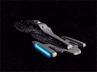
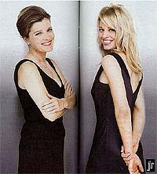
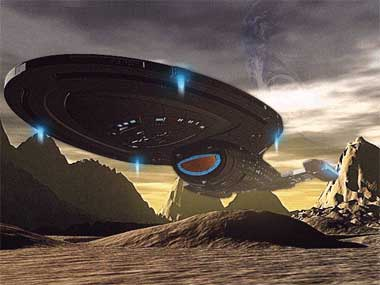
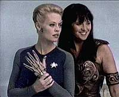
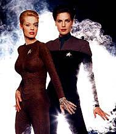
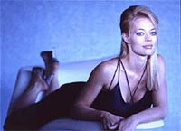
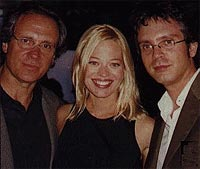

|
por Gustavo Leão
 Jornada
nas Estrelas - Voyager. Um produção que agora está em suas
horas finais. Foram sete anos que valeram a pena? É uma questão
provocativa --cada pessoa que teve a oportunidade de assistir a
toda a série tirou sua própria conclusão. E eu aposto (modéstia
à parte) que você está esperando a minha resposta. Jornada
nas Estrelas - Voyager. Um produção que agora está em suas
horas finais. Foram sete anos que valeram a pena? É uma questão
provocativa --cada pessoa que teve a oportunidade de assistir a
toda a série tirou sua própria conclusão. E eu aposto (modéstia
à parte) que você está esperando a minha resposta.
 Pode
essa série se tornar um clássico nos anais dos seriados vindos
do espaço sideral (ou seja, de Hollywood, ou mais precisamente,
da Paramount Pictures)? Meu primeiro instinto, após me lembrar
dos pilares colocados pelo grande Michael Piller (com o perdão do
trocadilho) na primeira temporada (do conflito Maquis à
interessante questão da Primeira Diretriz no quadrante Delta,
abandonados completamente quando Braga assumiu a série, a partir
de "Future’s End"), do ótimo episódio-piloto
e de bons episódios como "Prime Factors", "Scorpion",
"Timeless", "Relativity", "Message
in a Bottle", "Drone", "Latent
Image", "Worst Case Scenario" e... (dê
mais uns minutos para eu ver se me lembro de mais algum) "Year
of Hell" (ufa!), seria dizer sim. "Sim", eu
diria, "Voyager não foi drama de primeira classe, mas
foi um baita entretenimento."
Infelizmente, uma análise mais profunda mostra que nem foi esse o
caso. Talvez o maior problema tenha sido o fato de Voyager
ter se tornado um seriado tímido e reacionário. Desde o momento
de sua criação, parecia que a série era o antídoto para Deep
Space Nine.
DS9 era o que o estúdio acreditava ser a versão dark e
opressora que visava recapturar a audiência de massa que A
Nova Geração tinha ao deixar o ar. E, claro, o fato de Deep
Space Nine ser o seriado de Jornada mais original e
inovador desde a Série Clássica e talvez uma das mais
adultas e dramáticas séries dos anos 90, com ou sem o nome de Jornada
nos créditos, não fez diferença aos cofres da Paramount.
 O
que importa é que a serie não foi considerada um sucesso de público
(e de vendas de merchandise, lógico). Voyager, por outro
lado, seria o retorno à época das naves estelares e de exploração
(do espaço sideral e do bolso dos trekkies). O lançamento de uma
nova rede de TV. Um capitão do sexo feminino na carne de uma
atriz já nominada ao Oscar (pelo menos até Geneviève Bujold
abandonar o papel de Nicole Janeway e ser substituída pela
charmosa, mas não tão talentosa, Kate Mulgrew).
No entanto, uma coisa engraçada aconteceu --os telespectadores
norte-americanos (e pior, os próprios trekkies, lunáticos ou não)
não estavam curtindo a série como suas precursoras. Os
personagens eram bidimensionais, bobinhos, e a nave era
praticamente um repeteco da Enterprise-D (só o design exterior
havia mudado). E as semelhanças continuavam, como num jogo de
adivinhação: B’Elanna era dessa vez a meio-alienígena com sua
dualidade racial, às vezes tortuosa, (Spock, Troi, Worf), o jovem
e brilhante Harry Kim (Chekov, Wesley, Jake), Seven of Nine em
busca de sua humanidade (Spock, Data, Odo) e daí por diante. Não
era completamente inovador (aliás, estava longe de ser inovador),
mas foi a fundação de uma série que prometia ser ao menos
interessante.
Infelizmente, os escritores esqueceram de servir seus personagens
e desenvolvê-los (com respeito à cronologia, diga-se de
passagem, coisa que Braga e Menosky jogaram pela janela junto com
o livro "Star Trek Cronology", um trabalho meticuloso,
mas ignorado, dos pobres Michael e Denise Okuda).
Em vez disso, tomamos doses e mais doses de anomalias espaciais e
tecnobaboseira que faziam menos sentido que a série "Bruxa
de Blair", e fenômenos alienígenas grotescos que, em vez de
servir como catalisadores para as histórias, eram as próprias
histórias --o começo, meio e fim dos episódios. E você se
pergunta por que algo tão prosaico como o mal-produzido "Andromeda"
e o derivativo "Roswell" (que tem mostrado vida
ultimamente), ou ainda os divertidos e ótimos "Xena" e
"Buffy", têm chutado Voyager no saco com o
passar do tempo.

A resposta é: pelo menos ali algo acontece com os personagens,
pelo menos ali nada permanece o mesmo, os personagens (pra não
falar da saga que os envolve) evoluem. Já em Voyager
...temos pseudo-drama com consequências... estáticas. A menos,
é claro, que Troi e Barclay apareçam para agitar as coisas.
E convenhamos: não ajudou nada a introdução da excelente e belíssima
atriz Jeri Ryan como Seven of Nine, já que sua personagem logo se
viu presa nas mesmas anomalias dos roteiros ruins que prendiam
seus companheiros de tripulação já há quatro anos. Não que
isso importe a Ryan. Diferente de Kate Mulgrew ou Robert Beltran,
Ryan tem a beleza e o talento suficiente para arrasar com
Hollywood se conseguir se desfazer do personagem Borg que a marcou
e parar de fazer filmes ruins como "Dracula 2000" e
"Men Cry Bullets". E largue Brannon Braga e namore alguém
que tem futuro em Los Angeles, principalmente.
 E
enquanto os nerds e pseudo-intelectuais de plantão elegem a cada
vez mais canastrônica Gillian Anderson e a bolimia de Calista
Flockhart como duas das melhores atrizes na TV americana da
atualidade, eles deveriam estar prestando atenção é em Jeri
Ryan e Lucy Lawless (Xena) --duas atrizes que vão da comédia
para o drama e depois ao ridículo sem perder o fôlego (e nem o
rebolado). Basta dizer que elas tranformaram duas personagens
estereotipadas em pura diversão e conseguem tirar leite (e drama)
de pedras. É difícil dizer o que Jeri ou Lucy não fariam em um
papel sério e de verdade, numa série como "Homicide"
ou "The West Wing". Pena que "Cleopatra 2525"
tenha sido cancelado, porque eu adoraria ver onde a carreira de
Victoria Pratt iria. Mas essa já é outra história...
Enquanto isso o que sobra de interessante nessas duas atrizes
continua faltando em Voyager --talento. E para piorar, Voyager
não tem qualidade épica nenhuma e parte disso é porque certos
roteiros (além do descaso cronológico) são dificeis de engolir.
Janeway tentando subjugar a coletividade com um plano que parece
ter saído do ceérebro de Homer Simpson em "Unimatrix
Zero, Parts I & II" é um tapa na cara da inteligência
de (certos) telespectadores. Sim, claro --vamos nos tornar "drones"
e perder mais tempo com os Borgs e acabar com eles de uma vez por
todas (o que aliás nem adiantou, porque lá vem eles de novo em "Q2").
 Não
existe credibilidade, e para um show como Jornada (que já
tem um pé na pura fantasia), a falta de credibilidade é morte súbita.
Rick Berman sempre disse que credibilidade em Jornada é
maquiagem realista, cenários caros e nada de Andorianos (ou seja,
nada de antena). Mas ele está errado.
O que ele não percebe é que são os roteiros, as histórias,
personagens tridimensionais. Atores que gostem de seu trabalho. Os
personagens têm que ter credibilidade e agir com credibilidade (e
com o coração), e se eles fizerem isso, os fãs acreditarão no
resto. Michael Piller sabia disso em A Nova Geração, Ira
Behr sabia disso em Deep Space Nine.
Até o saudoso Gene Coon e a talentosa D.C. Fontana sabiam disso
nos áureos tempos de Série Clássica, quando Jornada
era apenas um subproduto dos estúdios Desilu. Mas Braga e Berman
ao que parece se esqueceram desse detalhe e como resultado a sexta
e a sétima temporada de Voyager têm sido as piores coisas
que já assisti desde o terceiro ano da série original. Até os
desenhos animados têm mais caracterização e roteiros mais
interessantes que "Fair Haven", "Fury",
"Drive", "The Haunting of Deck Twelve",
"Critical Care" ou "Flesh and Blood"...
é só falar.
 Os
caras que fizeram tudo isso com o nosso "queridinho"
franchise são os mesmos indivíduos que vivem se contradizendo na
imprensa sobre a criação de uma nova série de Jornada que,
dizem eles, estráia ainda esse ano (o que eu sinceramente duvido
--marque janeiro de 2002 no seu calendário trekkie). Não importa
discutir se a série será ambientada no século 22 ou no 29.
Importa é se a série vai ter profundidade, caracterização. O
design da nave e a maquiagem são irrelevantes. Os roteiros e o
amor ao trabalho, isso sim é relevante --e Braga e Berman
perderam isso, infelizmente.
Berman deixou de ser um produtor para ter uma mentalidade de
executivo vendedor-de-carros-usados e Braga deixou de ser um
roterista criativo para embarcar em sua própria ego-trip nas
estrelas.
 Por
isso, meu amigo trekkie ou leitor eventual, quando Voyager acabar
com um suspiro, e não um estouro, em maio proximo, comemore o
começo da carreira verdadeira de Jeri Ryan, o fim de sete anos de
desperdício de tempo e dinheiro (bom, pelo menos do meu, que tive
de importar todos esses 150 e tantos episódios) e reze para que
John Logan tenha pelo menos um pouco de voz ativa em Jornada 10.
Lembre-se o que aconteceu quando Michael Piller decidiu que Picard
deveria enfrentar os Romulanos numa saga dark chamada "Jornada
nas Estrelas - Insurreição" e espere que a Paramount,
Rick e Sheri tenham aprendido a lição.
Senão Deep Space Nine será realmente digna dos profetas:
"What You Leave Behind".
|